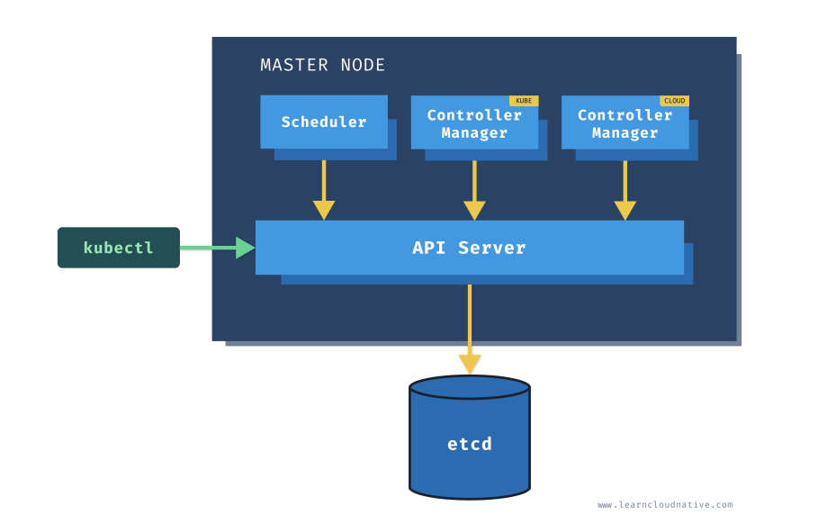

Kubernetes
Qu'est-ce que Kubernetes ?
Kubernetes est une plateforme open-source d'orchestration de conteneurs qui automatise de nombreux processus liés au déploiement, à la gestion et à la mise à l'échelle des applications conteneurisées.
Kubernetes automatise la configuration des applications, suit l'allocation des ressources et assure la gestion des conteneurs. Issu de la Cloud Native Computing Foundation (CNCF), Kubernetes a été introduit en 2014 et est aujourd'hui largement adopté par les entreprises pour exécuter des applications et services distribués à grande échelle.
Source : Red Hat - What is Kubernetes
Concepts et terminologies clés
Kubernetes repose sur plusieurs concepts et terminologies essentiels :
- Architecture du cluster : Concepts fondamentaux de l'architecture Kubernetes.
- Conteneurs : Technologie permettant d'emballer une application avec ses dépendances d'exécution.
- Workloads : Comprendre les Pods, la plus petite unité de déploiement dans Kubernetes, et les abstractions qui facilitent leur exécution.
- Services, équilibrage de charge et réseau : Concepts et ressources liés à la gestion du réseau dans Kubernetes.
- Stockage : Solutions pour fournir un stockage temporaire ou persistant aux Pods du cluster.
- Configuration : Ressources permettant de configurer les Pods et autres objets Kubernetes.
- Administration du cluster : Détails avancés pour la création et la gestion d'un cluster Kubernetes.
Contexte
Pour obtenir plus de contexte sur votre cluster Kubernetes, utilisez la commande suivante :
kubectl config current-context
Exemple de sortie :
thor@DESKTOP-TF4VOVB:~$ kubectl config current-context
docker-desktop
Architecture de Kubernetes
Nœuds Kubernetes
Un cluster Kubernetes est composé de machines physiques ou virtuelles et de ressources d'infrastructure permettant d'exécuter des applications conteneurisées. Chaque machine dans un cluster est appelée un nœud. Il existe deux types de nœuds dans un cluster Kubernetes :
- Nœud maître (Master Node) : Héberge le plan de contrôle Kubernetes et gère le cluster.
- Nœud de travail (Worker Node) : Exécute les applications conteneurisées. 
Composants du nœud maître

- API Server : Point d'entrée principal pour la communication avec Kubernetes via la CLI.
- Kube Controller Manager : Exécute plusieurs processus de contrôle qui surveillent et ajustent l'état du cluster selon les spécifications définies (ex : nombre de réplicas souhaité pour un déploiement).
- Cloud Controller Manager : Gère les interactions avec les fournisseurs de cloud pour la gestion des ressources externes (ne fonctionne que dans un environnement cloud).
Composants du nœud de travail
- Kubelet : S'exécute sur chaque nœud de travail et gère les conteneurs, en s'assurant qu'ils fonctionnent correctement. Il communique avec le plan de contrôle via l'API Server.
- Kube Proxy : Gère les règles réseau et assure la communication entre les Pods.
Outils recommandés
Pour travailler en local avec Kubernetes, vous pouvez utiliser les outils suivants :
- Docker Desktop : Fournit un environnement Kubernetes intégré.
- Minikube : Permet d'exécuter un cluster Kubernetes localement sur une machine unique.
- kind (Kubernetes IN Docker) : Outil permettant d'exécuter Kubernetes dans des conteneurs Docker.
Ressources Kubernetes
L'API Kubernetes définit plusieurs objets appelés ressources, tels que :
- Namespaces : Permettent d'organiser les ressources Kubernetes dans des espaces isolés.
- Pods : Plus petite unité de déploiement contenant un ou plusieurs conteneurs.
- Services : Exposent les applications conteneurisées aux autres services ou à l'extérieur du cluster.
- Secrets et ConfigMaps : Permettent de stocker et de gérer des informations de configuration sensibles.
Vous pouvez également définir des ressources personnalisées via les Custom Resource Definitions (CRD).
Pour lister toutes les ressources disponibles dans votre cluster, utilisez :
kubectl api-resources
Chaque ressource Kubernetes possède des champs obligatoires :
- apiVersion : Définit la version de l'API utilisée (ex :
apps/v1). - kind : Spécifie le type de ressource (ex :
Deployment,Pod,Service). - metadata : Contient des informations sur la ressource, comme son nom et son espace de noms.
- labels et annotations : Métadonnées supplémentaires permettant d'organiser et d'annoter les ressources.
Après la création d'une ressource, Kubernetes ajoute automatiquement certains champs, comme creationTimestamp.